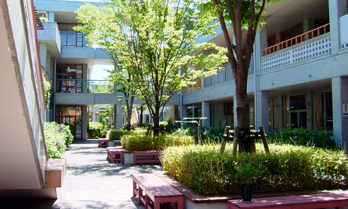
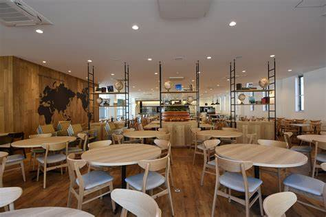
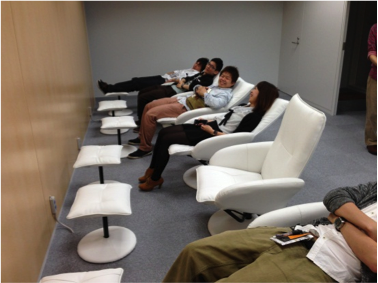
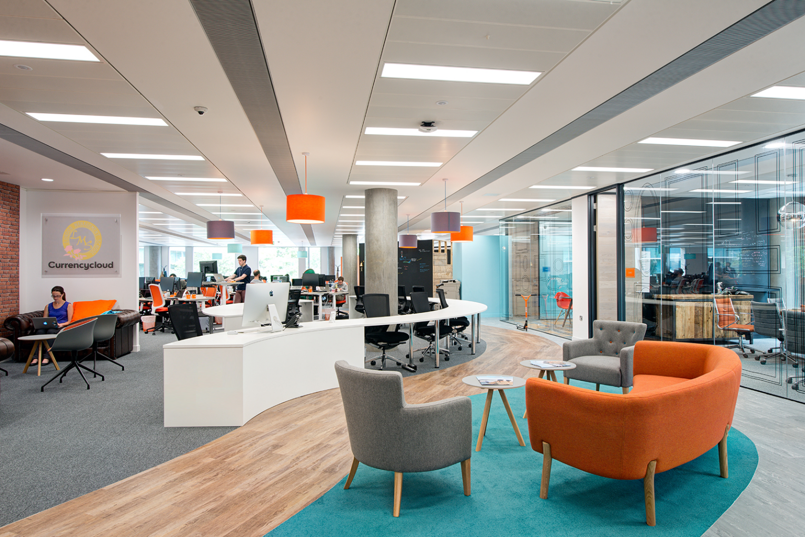
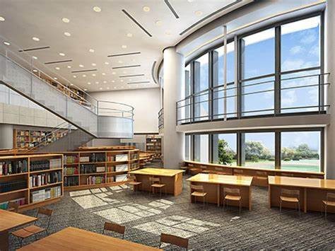

本学の設備

中庭
本校自慢の中庭。落ち着いた雰囲気の中、食べる昼食は天下一品。時には、 吹奏楽部の演奏を楽しみながら優雅なランチタイムを取ることも可能です。
食堂
本校には食堂もあります。毎日和食、洋食、中華の3種類を用意しています。 値段は400円前後なので、財布に優しいかも？
仮眠室
本校には仮眠室も完備しています。昼寝をすることは午後の活動に対して、非常に 効果的であることが示されており、本校でも、今年から取り入れることになりました。
パソコン室
教育内容でも提示した通り、本校ではプログラミングの授業があります。 こちらのパソコン室では1人１台最新のパソコンを用意しています。